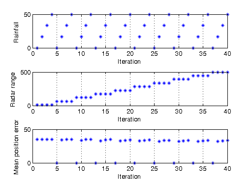

Distributed Air Traffic Control Radar Simulation
This demo uses the Parallel Computing Toolbox™ to perform a conceptual air traffic control radar simulation based on the radar range equation. The simulation varies radar range and rainfall amount, then calculates the difference between the actual and the estimated aircraft position. This demo also provides an example of how the Parallel Computing Toolbox can perform a parameter sweep of a Simulink® model.
For details about the computations, you can view the code for pctdemo_setup_aero_atc and open the aero_atc model.
Prerequisites:
Related demos:
Contents
Analyze the Sequential Problem
First, we look at how the computations in the sequential demo fit into the model introduced in the Dividing MATLAB Computations into Tasks demo. The main computations consist of multiple simulations using different rainfall and radar range parameters. A single simulation takes only a few seconds, so we have each task perform several simulations. Because the function pctdemo_task_aero_atc is vectorized, we can use it directly as our task function.
Load the Demo Settings and the Data
The demo uses the default configuration when identifying the scheduler to use. The configurations documentation explains how to create new configurations and how to change the default configuration. See Customizing the Settings for the Demos in the Parallel Computing Toolbox for instructions on how to change the demo difficulty level or the number of tasks created.
Because this demo uses callbacks, we also verify that we have a job manager object to use, rather than one of the other scheduler types.
[difficulty, manager, numTasks] = pctdemo_helper_getDefaults(); if ~isa(manager, 'distcomp.jobmanager') error('distcomp:demo:NotJobmanager', ... ['This demo uses callbacks, which are only available with ' ... 'a job manager.']); end
We obtain all the input parameters for our simulation from pctdemo_setup_aero_atc. The length of the rainfall and radar range vectors (and, therefore, the number of simulations) is determined by the difficulty parameter. You can view the code for pctdemo_setup_aero_atc for full details.
[figHandles, iters, in_rainfall, in_Rrange] = ...
pctdemo_setup_aero_atc(difficulty);
Divide the Work into Smaller Tasks
We have three vectors of equal length that we want to divide into numTasks segments. We can have task i work on the iterations splitIters{i}, corresponding to the rainfall splitRain{i} and the radar range splitRrange{i}.
[splitRrange, numTasks] = pctdemo_helper_split_vector(in_Rrange, numTasks); splitRain = pctdemo_helper_split_vector(in_rainfall, numTasks); splitIters = pctdemo_helper_split_vector(iters, numTasks); fprintf(['This demo will submit a job with %d task(s) ' ... 'to the scheduler.\n'], numTasks);
This demo will submit a job with 4 task(s) to the scheduler.
Create and Submit the Job
We set the task finished callback function to be pctdemo_taskfin_aero_atc. The task finished function collects the task results and calls pctdemo_plot_aero_atc to update our plots as new data becomes available. We let the UserData property of the task store the output figure and the iterations, thereby giving the callback function easy access to them. You can view the code for pctdemo_task_aero_atc and pctdemo_taskfin_aero_atc for full details.
startTime = clock; job = createJob(manager); for i = 1:numTasks task = createTask(job, @pctdemo_task_aero_atc, 1, ... {splitRain{i}, splitRrange{i}}); set(task, 'FinishedFcn', @pctdemo_taskfin_aero_atc); dataForFinishedFcn = struct('figHandles', figHandles, ... 'iterations', splitIters{i}); set(task, 'UserData', dataForFinishedFcn); end
We can now submit the job and wait for it to finish.
submit(job);
waitForState(job, 'finished');
 Retrieve the Results
As each task finishes, the task finished callback function collects the task results and adds them to the UserData property of the job. The callback function also updates the plot of the difference between the actual and the estimated aircraft position. Therefore, we do not need to perform any plotting here, and we simply verify that we obtained the results we were expecting. We throw an error if we could not obtain any results, but display a warning if we got only some of the results.
jobResults = getAllOutputArguments(job); if isempty(jobResults) taskErrorMsgs = pctdemo_helper_getUniqueErrors(job); destroy(job); error('distcomp:demo:EmptyJobOutput', ... ['Could not obtain any job results. The following error(s) ' ... 'occurred \nduring task execution:\n\n%s'], ... taskErrorMsgs); end
Combine all the task results into one column vector and verify the results we obtained.
results = cat(2, jobResults{:});
if ~(numel(results) == numel(iters))
taskErrorMsgs = pctdemo_helper_getUniqueErrors(job);
warning('distcomp:demo:IncompleteJobResults', ...
['Some tasks did not finish. Only %d out of %d ' ...
'calculation steps were completed. \nThe following ' ...
'error(s) occurred during task execution:\n\n%s'], ...
numel(results), numel(iters), taskErrorMsgs);
end
We have now finished all the verifications, so we can destroy the job.
destroy(job);
Measure the Elapsed Time
The time used for the distributed computations should be compared against the time it takes to perform the same set of calculations in the Sequential Air Traffic Control Radar Simulation demo. The elapsed time varies with the underlying hardware and network infrastructure.
elapsedTime = etime(clock, startTime);
fprintf('Elapsed time is %2.1f seconds\n', elapsedTime);
Elapsed time is 50.7 seconds